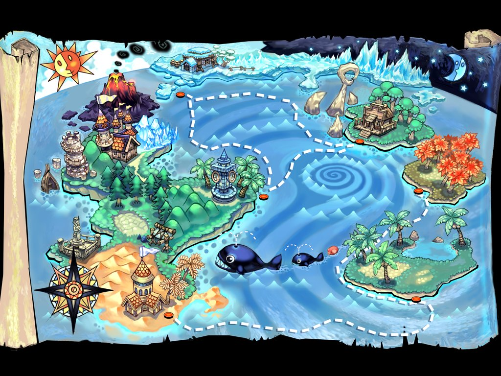

PvE clássico · solo · 1–100
Guia Tales of Pirates
Tudo tirado dos arquivos do servidor.
Comece aqui
Escolha a classeTroca no 9 e no 40.Siga a rotaOnde caçar do 1 ao 100.Faça goldStore, equipamento e farm.Entre na históriaO começo, sem spoilers.
O que muda
5xEXP + bônus por nível
3xdrop
100nível máximo
Solobosses ajustados
Novahistória reescrita
GoldStore sem cash
3 níveisde montaria
Calmomar mais tranquilo
Auto-lootopcional
Diáriarecompensa
10 minbotão Home
Livreviagem rápida
Detalhes em Regras.